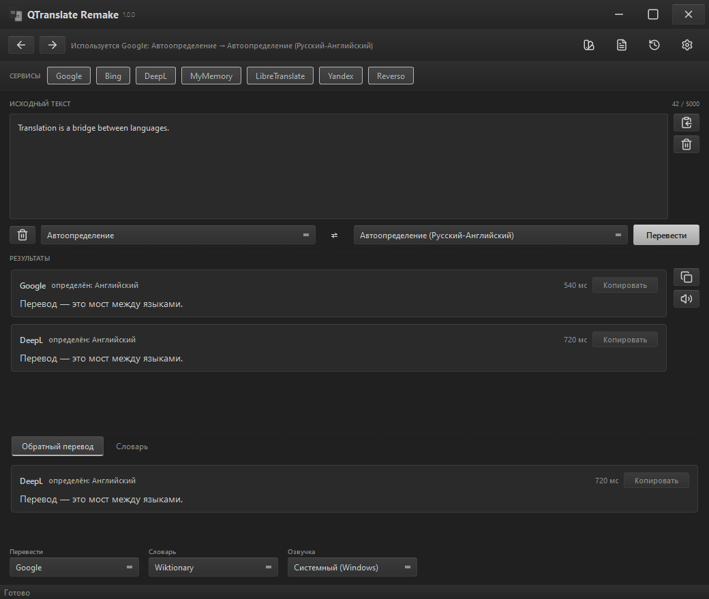
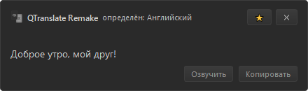

01
Не переключать окна
Попап появляется поверх активного приложения, рядом с выделенным текстом. Ни браузера, ни вкладок, ни копирования.
QTranslate Remake · Metal · Windows / Linux
Выделил текст — нажал Ctrl+Q — понял, не переключая окно. Семь переводчиков сразу, распознавание текста с экрана и проверка орфографии. Без API-ключей.
Сборка без цифровой подписи: SmartScreen может спросить подтверждение. «Подробнее» → «Выполнить в любом случае».


Главное окно, быстрый перевод, словарь и настройки. Всё в одной тёмно-серой палитре Metal — той же, что и в приложении.
01 / 08 · Интерфейс
Перевод — это не отдельная программа, а пауза внутри работы. Выделил слово — и застрял: открой браузер, вставь, выбери сервис, скопируй обратно. QTranslate убирает эту цепочку: Ctrl+Q, попап у курсора, семь вариантов перевода.
Принцип QTranslate
01
Попап появляется поверх активного приложения, рядом с выделенным текстом. Ни браузера, ни вкладок, ни копирования.
02
Google, Bing, DeepL, Yandex, Reverso, MyMemory и LibreTranslate работают без API-ключей. DeepL и LibreTranslate можно подключить к своим серверам.
03
Настройки и история лежат локально. Текст уходит только тем сервисам перевода, которые ты выбрал.
Девять вещей, за которые отвечает QTranslate. Никаких нейросетей, суммаризации и аккаунтов.
03 / 08 · Девять пунктов
Google, Bing, DeepL, Yandex, Reverso, MyMemory и LibreTranslate. Каждый результат — отдельной карточкой, с языком и временем ответа.
Выдели текст в любом приложении: попап появится рядом с курсором и закроется, когда кликнешь мимо. Хоткей переназначается.
Перевод вставляется прямо вместо выделенного текста — в том приложении, где ты работаешь. Без копирования туда и обратно.
Выдели область на экране — Windows OCR или Tesseract распознает текст, подставит его в поле ввода и сразу переведёт.
Пишешь по-русски — получаешь английский. Пишешь по-английски — получаешь русский. Язык определяется автоматически.
TXT, SRT, VTT, DOCX и PDF. Субтитры сохраняют тайминги, DOCX — абзацы и таблицы. Есть прогресс и отмена.
Wiktionary через официальный API или свой CSV-словарь. Озвучка — системный голос (SAPI, speech-dispatcher или espeak-ng) либо Google TTS по Ctrl+E.
Металл, Бирюза, Бронза и Светлая. Своё окно без системной рамки, аккуратный трей и сворачивание вместо закрытия.
Ошибки подчёркиваются прямо при вводе, а по правому клику предлагаются варианты замены. Используются словари Windows или Hunspell.
Выбери фразу — и посмотри, как выглядит быстрый перевод. Это упрощённая копия интерфейса; запросы к сервисам не отправляются.
04 / 08 · Интерактив
Перевод — это мост между языками.
Windows 10/11 x64 и Linux. Для Windows есть готовый .exe; Linux запускается из исходников, пакеты готовятся.
05 / 08 · Релиз 1.0.0
228394AD8C063A45684D58525AA4C9BAE32BD41F2EC16B4BDEE24D1B36813CBE
Файл не подписан, поэтому Windows может показать «Неизвестный издатель». Настройки и история создаются при первом запуске в %APPDATA%\QTranslate Remake (Windows) или XDG-каталогах (Linux).
Нужен Python 3.11+. Настройки и история при запуске из исходников будут лежать в _local\data.
# PowerShell
git clone https://github.com/Awaynos/QTranslate-R.git
cd QTranslate-R
python -m venv _local\.venv
_local\.venv\Scripts\pip install -r requirements.txt
_local\.venv\Scripts\python run.pyLinux:
# bash
git clone https://github.com/Awaynos/QTranslate-R.git
cd QTranslate-R
python3 -m venv _local/.venv
_local/.venv/bin/python -m pip install -r requirements.txt
_local/.venv/bin/python run.pyLinux: X11 и Wayland, зависимости и установка ярлыка — в docs/linux.md.
Если ответа нет — открой issue на GitHub. Ошибки, идеи и переводы интерфейса одинаково полезны.
06 / 08 · FAQ
%APPDATA%\QTranslate Remake, в Linux — XDG-каталоги. При запуске из исходников данные лежат в _local/data. Удаление папки сбрасывает настройки и историю.QTranslate Remake разрабатываю я, Awaynos. После него я сделал QMessages — обе программы выросли из одного принципа: локальный инструмент, который решает одну задачу и не мешает остальному.
QTranslate 6.10 был ориентиром, но не шаблоном. Здесь свой интерфейс, свои темы и своя логика: без аккаунтов, подписок и AI-функций.
QTranslate 6.10 умер, да здравствует QTranslate Remake.Awaynos
Быстрые заготовки для переписки: колесо сообщений под курсором, один хоткей и вставка в любое окно.
Открыть сайтСкачивать и пользоваться — бесплатно. Помочь можно и без денег: сообщить о баге, предложить идею, перевести интерфейс или поставить звезду.
08 / 08 · Поддержка
Самый простой способ помочь проекту заметить.
Ошибка, идея или неудобный сценарий — всё пригодится.
bc1qfaylkgnwct052snamqmnxl3uk26xpt5jg344fs0x44628629c1C6f8E8591d4f93735Ff6CD70DC8AfC0x44628629c1C6f8E8591d4f93735Ff6CD70DC8AfC3sTNRxJqATsJsKWyM5dxi4HHMLEKbp8f8dGU4wJ1xmE9Отправляй перевод только в указанной сети — иначе средства могут потеряться. Поддержка полностью добровольна.